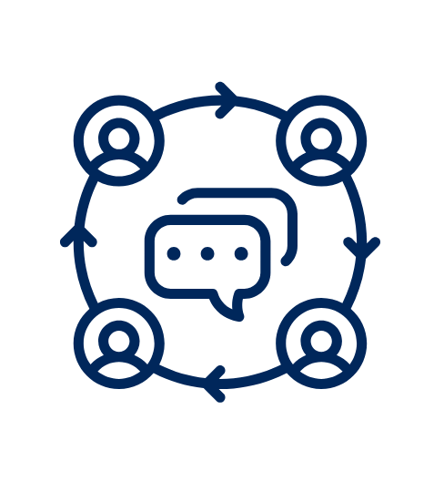

MindBridge, ou Ponte Mental, é a plataforma que visa conectar o membro com um profissional voluntário, oferecendo suporte psicológico por meio de diálogos e conversas de forma conectada e virtual, com comunidades em grupo, além de fornecer conteúdos de apoio sobre inteligência emocional.
Acesso Com Profissionais
